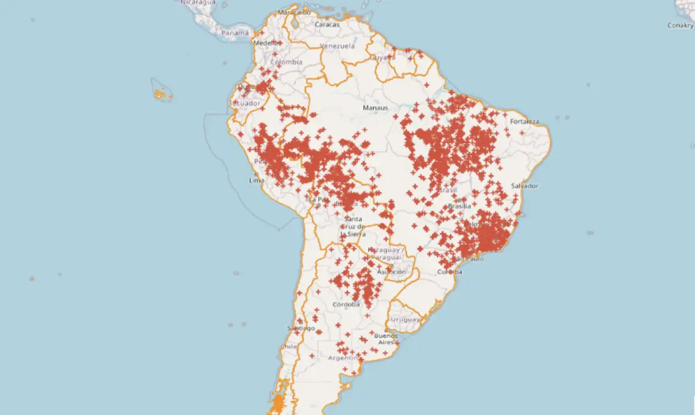

Queimadas...
As queimadas são problemas ambientais que ocorrem durante o ano todo,
tendo na estiagem que segue até o mês de outubro, a época com maior incidência,
destruindo vegetações e matando animais. Pode também, destruir áreas produtivas
como lavouras e pastagens, provocando grandes prejuízos.
Essas queimadas também emitem gases poluentes e fumaça, que causam mal à saúde
do ser humano, quando inalados imediatamente.
'O principal problema das queimadas é que elas podem acabar com a biodiversidade, matando
plantas, animais e os microorganismos fundamentais para o equilíbrio ecológico',

Principais Motivos...
Na maioria das vezes, essas queimadas são provocadas pela ação humana de maneira criminosa. Os incêndios são muitas vezes iniciados por agricultores em áreas de pastagens, para renovação de pastos, e por grupos que causam desmatamento para eliminar vegetação rasteira e retirada de madeira para comercialização.
Você Sabia...?
Resoluções
O Compromisso com o Planeta: Um Dever de Todos
A proteção ambiental é muito mais do que uma simples ideia. É uma responsabilidade que recai sobre todos nós, homens e mulheres, jovens e idosos, independente de onde vivemos. Nossa responsabilidade ambiental não se limita ao presente, pois suas repercussões se estendem para as futuras gerações. Entender a importância da preservação do meio ambiente é o primeiro passo para um mundo mais saudável.
Mas o que podemos fazer para evitar queimadas?
Segundo o Gov.br
Não jogue lixo e nem deposite entulhos às margens da rodovia;
Não jogue bituca de cigarro pela janela do veículo;
Evite utilizar fogo para limpeza de terrenos e queima de lixo;
E se avistar um foco de incêndio, avise os bombeiros através do número 193.
Boa parte dos focos poderiam ser evitadas com atitudes conscientes.
Mas e você?
O que você acha que pode ser feito para parar as queimas? Escreva abaixo e nos ajude a tornar o mundo um lugar menos quente